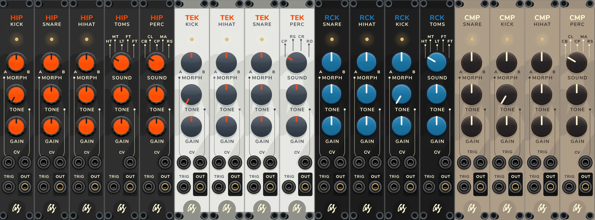
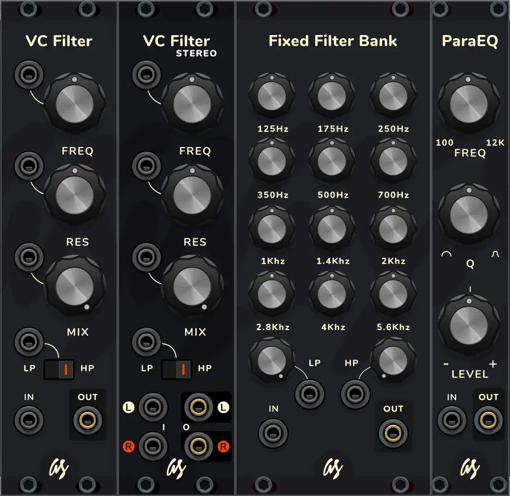

This is the AS Drums & Filters plugin, a paid but affordable collection of modules for the Virtual Eurorack Studio application VCV Rack 2, made from the perspective of a user and musician, and focused on useful features with a nice graphic user interface and small footprint... because even in a virtual rack, space and looks matter.

